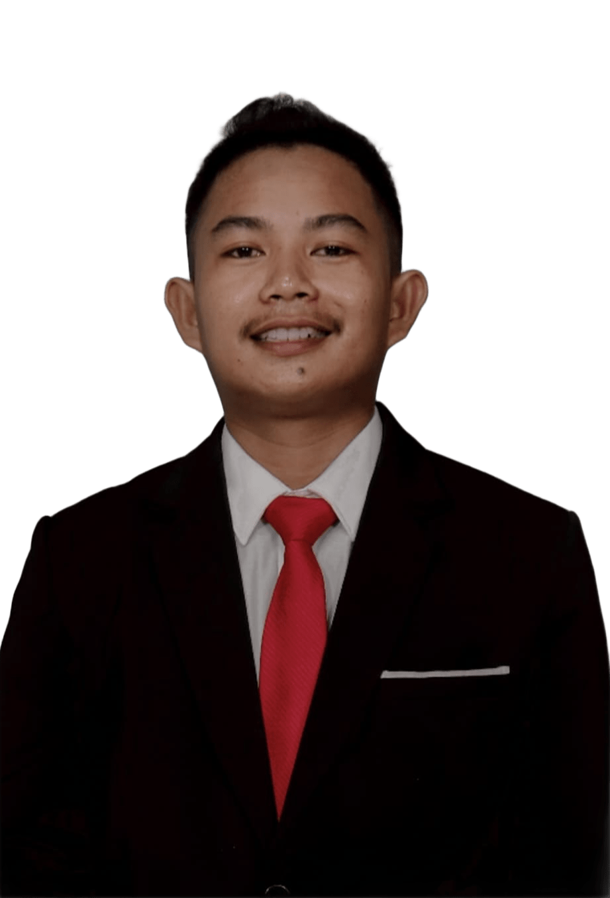

Flutter
Aplikasi Android dan iOS dari satu basis kode.
Mobile & Web Developer
Saya Nabil Huda Rizalul Haq. Saya mengembangkan aplikasi Flutter dan sistem web Laravel dari ide hingga siap digunakan.

Tentang saya
Saya menerjemahkan kebutuhan pengguna menjadi aplikasi mobile dan web yang mudah digunakan, terstruktur, dan dapat dikembangkan dalam jangka panjang.
Keahlian
Pilihan teknologi disesuaikan dengan kebutuhan produk, skala, dan kemudahan pemeliharaan.
Aplikasi Android dan iOS dari satu basis kode.
Backend, REST API, autentikasi, database, dan panel admin.
Antarmuka web modern, responsif, dan berbasis komponen.
Perancangan data relasional, query, dan integritas data.
Pengalaman yang konsisten di perangkat mobile dan desktop.
Version control, kolaborasi, audit perubahan, dan CI.
Proyek
Repository publik menampilkan implementasi mobile, web, machine learning, dan sistem informasi yang pernah saya kerjakan.
Pengembangan aplikasi lintas platform dengan integrasi API, database, sensor, dan machine learning.
Sistem manajemen berbasis peran, dashboard, laporan, ekspor data, dan panel administrasi.
Eksperimen klasifikasi, sistem pendukung keputusan, dan deployment model pada perangkat mobile.
Kolaborasi
Ceritakan tujuan, fitur utama, dan target proyek Anda melalui email atau media profesional berikut.